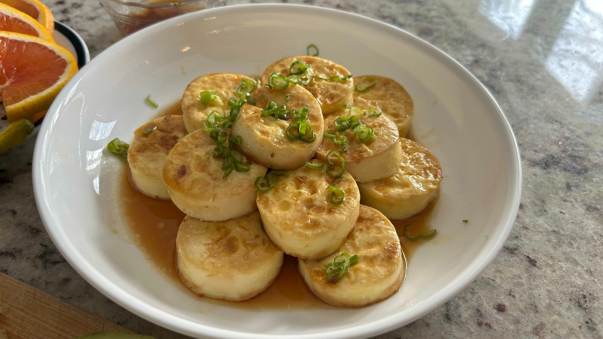

Side
Super-Simple Egg Tofu
Delicate rounds of egg tofu, fried just until golden and finished with an equally simple sweet-sour soy sauce.

Ingredients
- 1 tube egg tofu, sliced into thick rounds
- A little neutral oil, for frying
- Green onion, thinly sliced, to finish
Simple sauce
- 1 tbsp soy sauce
- 1 tbsp vinegar
- 1 tbsp sugar
- 1 tbsp water
Method
- Stir together the soy sauce, vinegar, sugar, and water.
- Heat a small amount of oil in a nonstick pan over medium heat.
- Add the egg-tofu rounds carefully and fry until golden underneath before turning. The tofu is delicate, so handle it as little as possible.
- Fry the second side until lightly golden.
- Pour in the sauce and let it bubble briefly around the tofu, just long enough to glaze the rounds.
- Transfer gently to a plate, spoon over the remaining sauce, and finish with green onion.
Notes
The only trick is restraint: little oil, moderate heat, and no unnecessary turning. Once the surface is golden, the tofu is much easier to move without breaking.